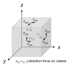

Ch2.1
Stress and strain tensor
To formulate the stress response in a manner consistent with large deformation, the Cauchy stress tensor (Fig. 2.1.1) is adopted throughout this study. The Cauchy stress represents the true stress—force per unit area on the current, or deformed, configuration—unlike engineering stress, which uses the original cross-sectional area.
Normal stress is taken as positive in compression.

Effective stress
In soil mechanics, the concept of effective stress is fundamental. While the Cauchy stress tensor $\boldsymbol{\sigma}$ represents total stress, it is the effective stress tensor $\boldsymbol{\sigma}'$ that controls deformation of the soil skeleton. Effective stress is defined as
Here, $u$ is pore-water pressure and $\mathbf{I}$ is the second-order identity tensor.
Incremental strain
To accommodate large deformation within an Updated Lagrangian framework, deformation is expressed incrementally relative to the current configuration in a Cartesian coordinate system. Accordingly, the linear strain increment tensor is employed as the simplest measure of deformation:
Here, $\mathbf{v}$ is displacement relative to the current configuration; subscripts denote basis directions in the Cartesian coordinate system. Normal strain is taken as positive in compression. Total strain is obtained by integrating incremental strain over time:
Here, $t$ denotes final time or total deformation extent. With a corotational formulation (for example, the Jaumann rate), apparent stress variations caused by rotation are corrected in a fixed Cartesian coordinate system $(x,y,z)$. The total strain can then be approximately evaluated as
Here, $\Delta\boldsymbol{\varepsilon}^{j}$ is the numerically obtained strain increment at time step $j$. This provides a consistent coordinate system for incremental stress and strain updates.
Natural strain and state variables
For specific deformation modes, such as uniaxial deformation or isotropic compression, analytical integration is possible. In those cases, total strain corresponds exactly to natural (logarithmic) strain. Natural strain in volumetric, vertical, and radial directions is defined as
Here, $V$, $H$, and $r$ denote the current volume, height, and radius of the deforming body, while $V_0$, $H_0$, and $r_0$ are their values in the initial configuration. These natural strains are associated with conventional engineering strains (with subscript $n$ omitted):
The void ratio, $e$, a volumetric state variable commonly used in soil mechanics, is defined as
where $V_v$ is volume of voids and $V_s$ is volume of solids. It is sometimes expressed as specific volume, $f$, by adding unity to the void ratio:
Here, $V_t$ is total volume of saturated soil, such that $V_t = V_s + V_v$. These state variables relate to volumetric strain measures as
Here, $e_0$ and $f_0$ are the initial void ratio and specific volume, respectively.